UES PENELOPE // POD B-104 // SLEEPER AI, EPISODE THREE
Fifty-four seconds of film, three days, every take that did not ship next to the one that did. The rejected work is most of the record. This page is the record.
The locked film, fifty-four seconds. Watch it first: everything below is what it took to get here, and most of it did not make the cut.
The Boo at the end is a whisper on purpose. It went out without the word on screen, seven people could not hear it, and the video was pulled and reposted with "Boo!" burned in. The diary has the take ladder.
Open on YouTube · episode three of Sleeper AI
Act 1 · the girl
Episodes one and two belong to the ship's AI, a calm voice and a single lens. Episode three needed a human, and the human had to be the hook: the series' own data says a short is decided at the first second, and the strongest image wins. The brief was one line: a crew woman wakes, runs scared, does not understand why the ship is different. Cryo undergarments, 1990s dark anime.
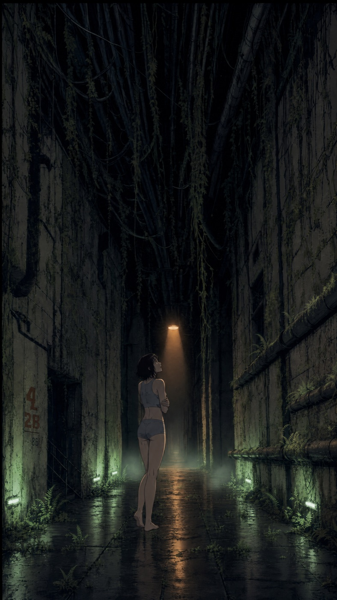
First try, in the episode two corridor. Generated as an edit of an existing plate so the world did not drift. Arms hugged, one foot off the cold floor. The outfit and the register were locked here: an ordinary scared person, never a pin-up.
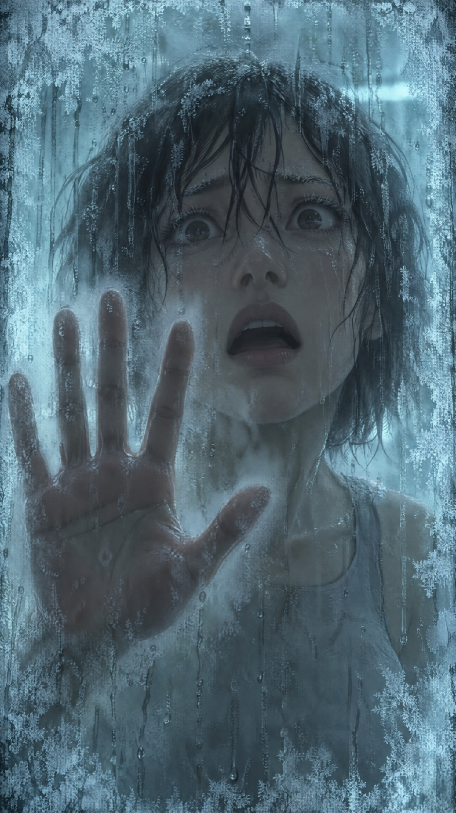
The strongest hook frame in the series, and the first drift. Close-ups slide toward photoreal; the cel look survives only with "flat cel shading, no 3D render look" spelled out. This face opened the film for two days and was then replaced, see act two.
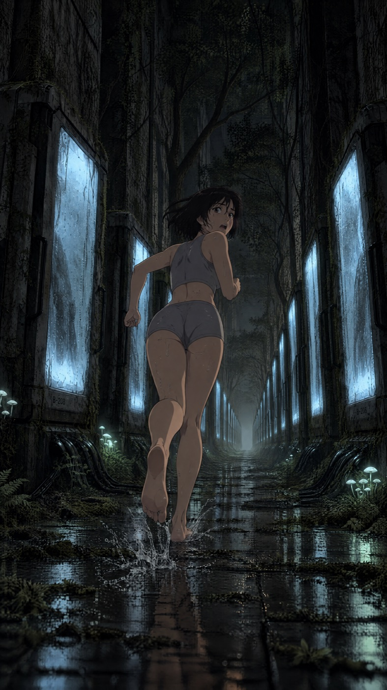
The pod wall held its labels. Same character, same outfit, running. Never animated: the film ended up with her on her knees for fifty seconds and never running at all.
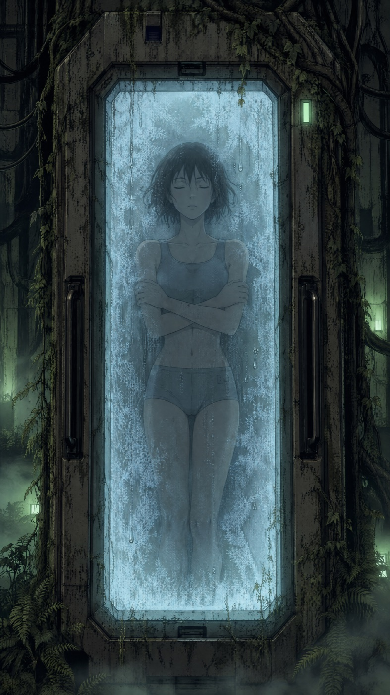
The cleanest drawing of her in the project. Made on day three as a candidate opening. Lost to a close-up because the opening has to be a face. Kept as the poster.
Rule carried in: every further shot of her is an edit with these three references attached, plus the phrase that stops the drift. The one that broke it was the close-up, every time.
Act 2 · scene one, three times
The first version was a terror snap: eyes burst open, palm slams the glass. It worked as a clip and failed as a scene, because the next shot starts with her head down inside a sealed pod. The second version fixed the continuity and lost the picture quality. The third fixed both.
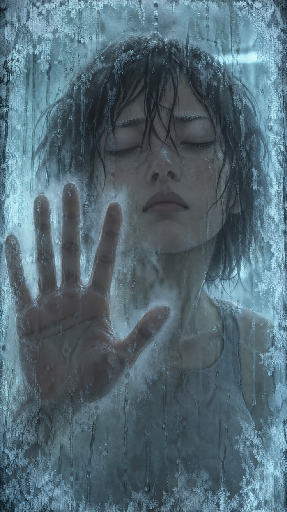
Asked for eyes closed and the hand removed. Got eyes closed. A sleeping woman with her palm on the glass is a different, stranger story. Prompt-only removal failed; the hand came off with a mask.
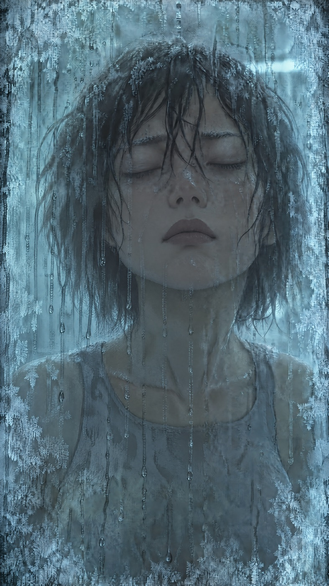
Right pose, wrong medium. Inpainting recentred her and kept the photoreal drift. It carried scene one for two days and was the softest first second in the film.
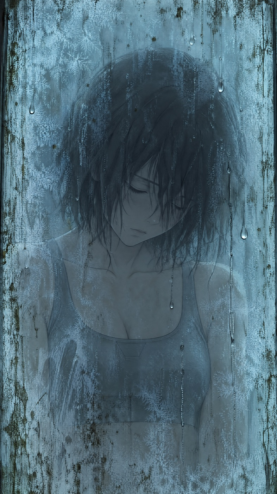
Head down, dirty glass, real ink lines. Built from the best-drawn plate. One note killed it: she has just thawed, so the glass should be wet, not iced.
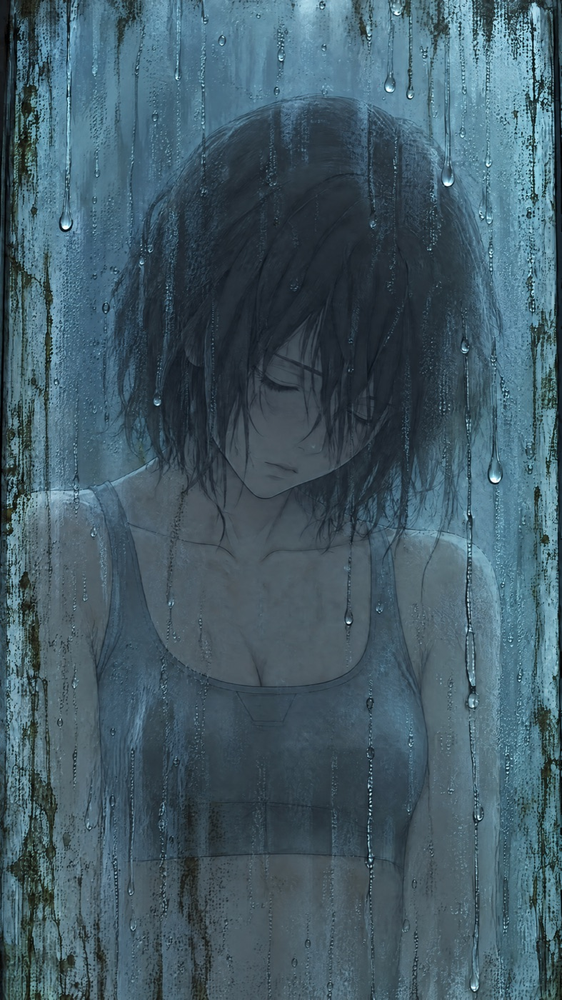
Frost off, meltwater on. Same pose, same framing, clearer through the glass. This is the one that got animated.
The kept clip overshoots: after 4.6s she keeps sinking and tips sideways. The film uses seconds 2.2 to 4.7, chosen from a contact sheet, and cuts before the tip. A clip whose back half is wrong is not a reject if the front half is the scene.
Act 3 · the fall
The pod opens and she falls out. The reliable way to get a video model from A to B is to hand it both: a first frame with the pod sealed and her inside, a last frame with her on the floor. The still with her on the floor was made first; the sealed version was edited from it.
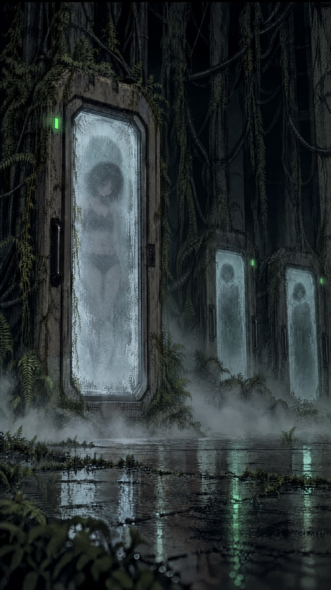
The moment before. Same camera, lid sealed, floor empty. Edited from the frame on the right with the instruction to change only those things.
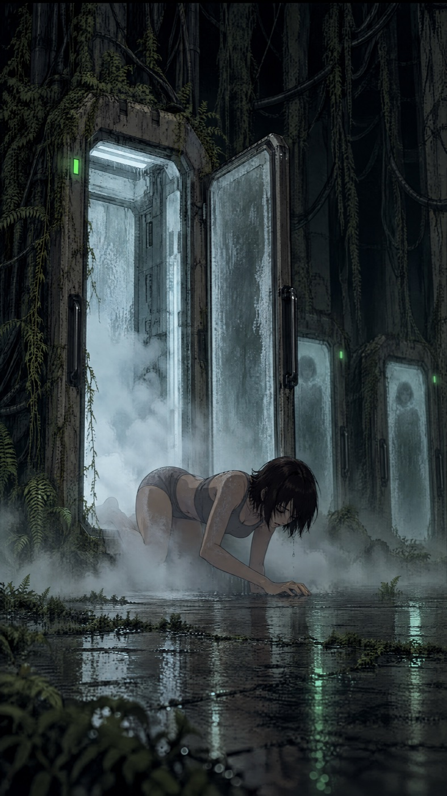
A body dumped out of a machine. Lid open, fog on the floor, her on hands and knees. Two more pods behind with sleeper silhouettes, no faces: the series allows one human face per film.
"Falls out" became "stumbles out and collapses". A retake prompt was written that forbids standing. It was never run; the fog burst was worth more than the half second cost, and the money went to the ending. Accepted flaw, on the record.
Act 4 · floor, and the sound argument
House rule for two episodes: generate video silent and add every sound ourselves, so each fader stays ours. Scene three broke the rule on purpose and the rule changed.
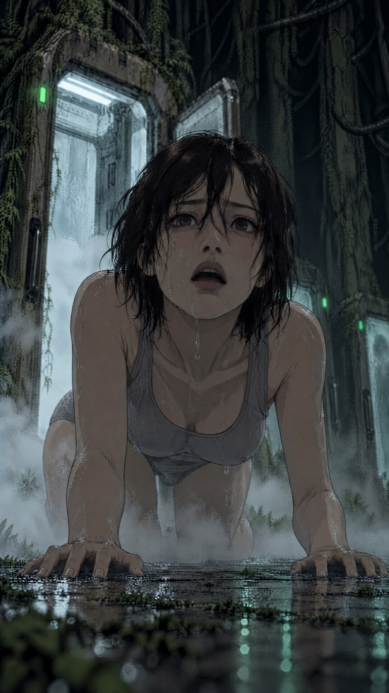
Reverse angle at floor level. Head coming up, drip on the chin, eyes unfocused. Generated with the face reference attached and the anti-render phrase; the ink lines held.
I think the Seedance would have added better human sounds. More in-context of what is happening. Next time, let's clarify this before the generation.Alex, after hearing the pasted gasp
Rule as it stands now: silent by default, except a lip-synced line or a human vocal reaction. For those, the question "model audio, or ours?" is asked before submit, next to the prompt and the price. The model hears the body it is animating; a pasted effect is guessed and placed by counting frames.
Act 5 · her eyes
Two of the film's nine scenes are a still image with a camera move. The hall from her eye height is one 4K plate and a 9:16 window sliding across it. The ceiling is a square plate rotated eight degrees. Neither touched a video model.
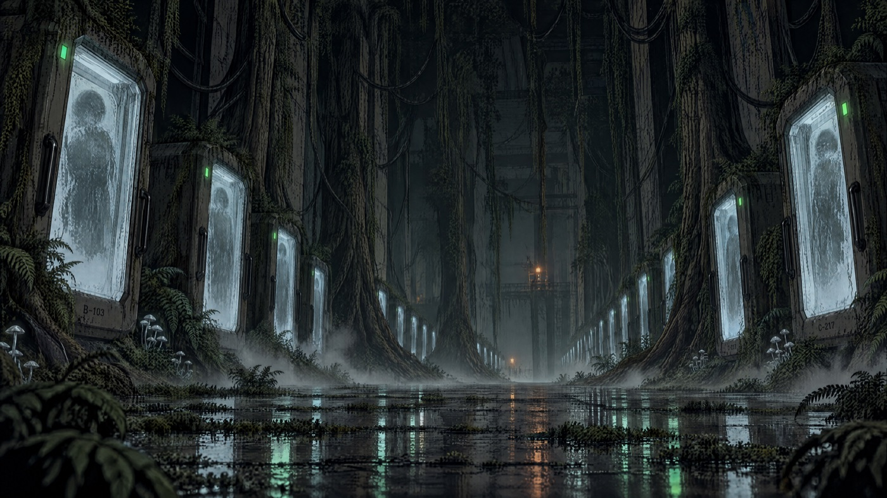
The best plate of the episode, first try. Pod labels B-103 and C-217 for anyone who freeze-frames. Generated landscape so the vertical window has real pixels and a long way to travel.
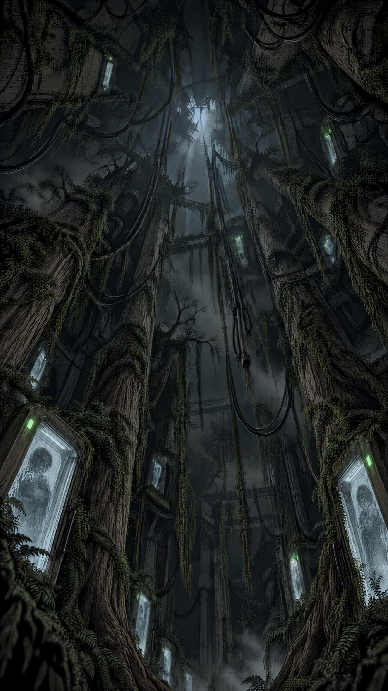
"The room is not a cylinder." A radial shaft made for rotating. Alex wanted the actual hall with walls and a passage, more detail, and the Evangelion register rather than the series' Blame! one.
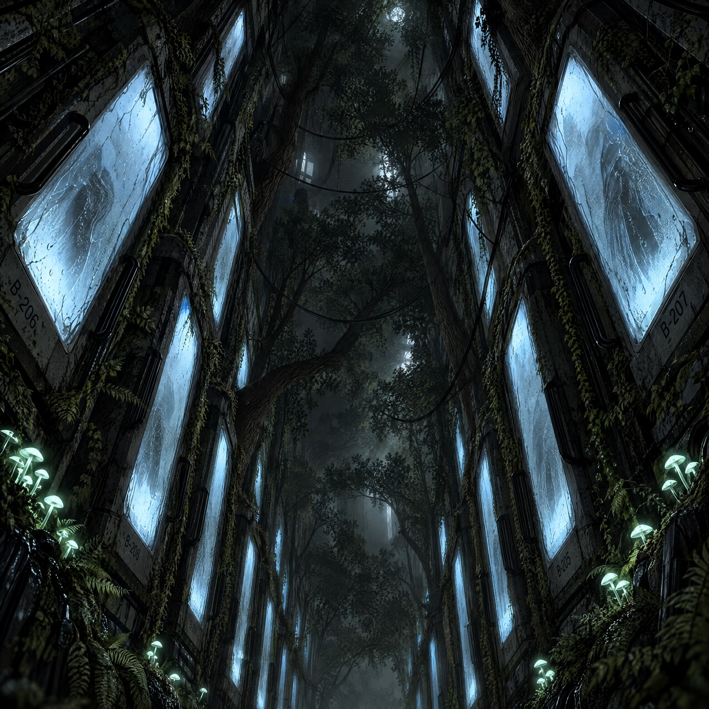
Square on purpose. A 9:16 crop from the centre of a square can rotate to any angle without showing an edge. The maths was done before the plate was ordered.
Act 6 · the crawl and the panel
The series answers questions with telemetry, never dialogue. She crawls back to her pod and reads the panel. Getting the crawl took a start frame that did not exist, and getting the panel took six versions of one screen.
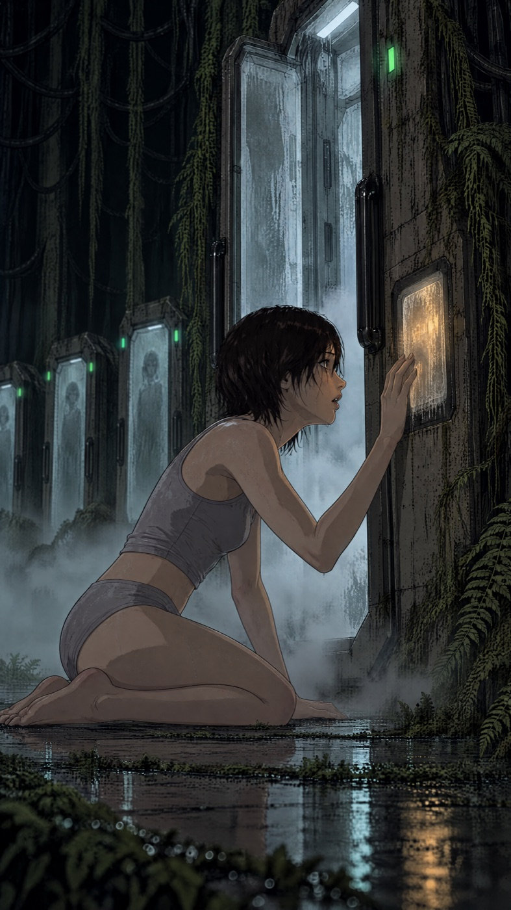
Where the crawl ends. Kneeling at the frame, hand up to a hand-sized frosted panel with an amber glow behind it. Made first, first try.
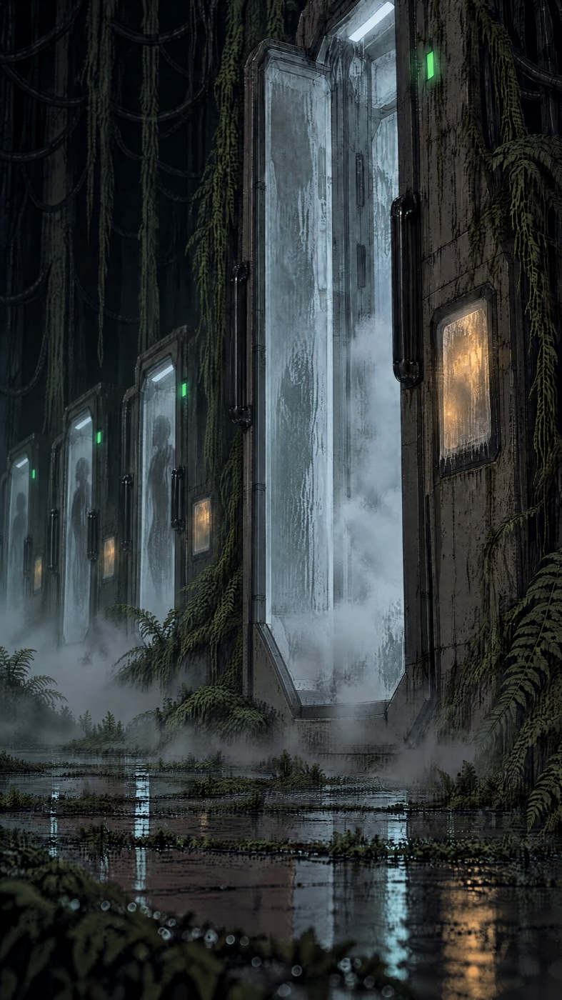
The inpaint removed her and redrew the pod. Outside the mask was supposed to be untouched; the lid came back as a tall glass door and every pod grew a panel. First mask was also too small and left her head and arm behind.
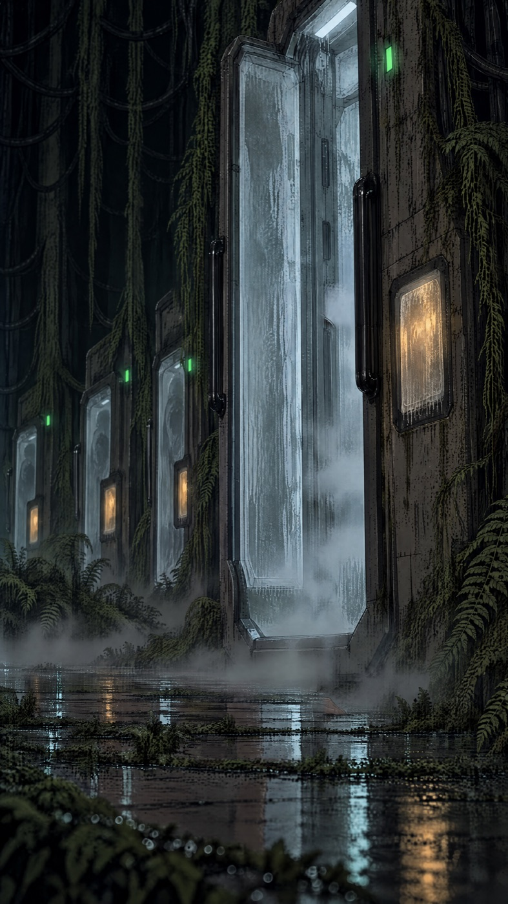
Original pixels pasted back over everything but the hole. A bigger two-box mask, a second inpaint, then the original composited over it with a blurred edge. Now the two frames agree and the model only has to invent her.
The panel text is a web page in the series' CRT style, amber because the panel in the plate glows amber, captured frame by frame through a browser. Cheap to change, deterministic, and it carries the film's only statement of the catch: REVIVAL NOT REQUESTED. The Goddess did not wake her. The film never says what did.
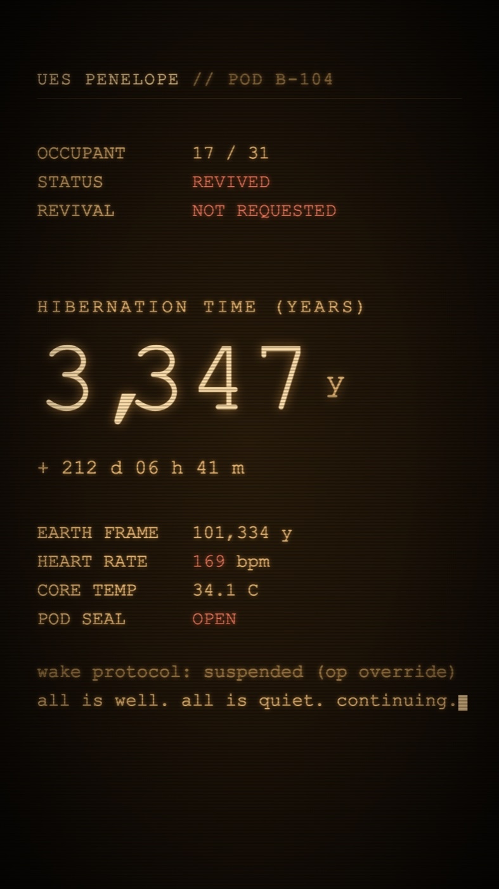
The page, full frame. Odometer settling on 3,347 years plus 212 days, the Earth-frame figure worked out from the episode two drive, a heart rate that wanders. "Doesn't look like the exact screen she is looking at."
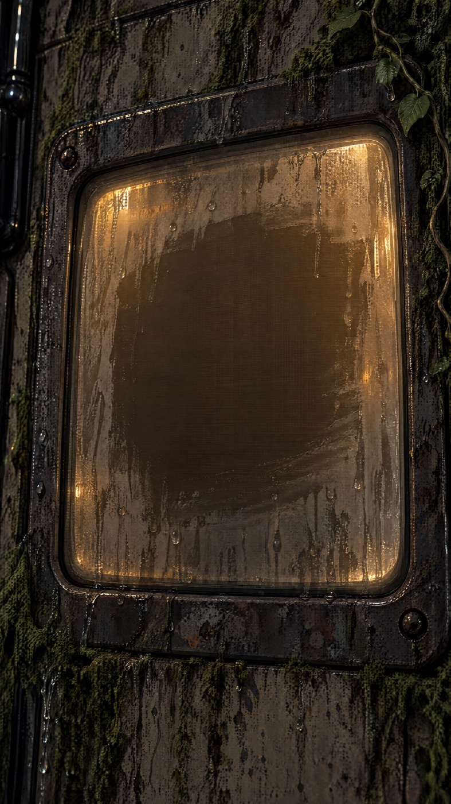
The physical panel, at an angle I asked for. Page warped into the glass and screen-blended so the frost stays on top. Then four rounds of "more keystone", "too much", "a little less". The angle was my choice and the whole argument was its cost.
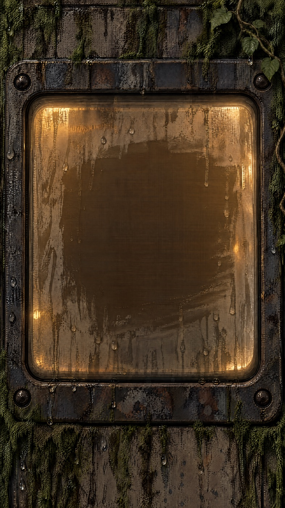
"Why don't we have the straight screen image?" She is kneeling right in front of it. One flat rectangle, no keystone, same composite. Built and then not used: the wipe replaced it.
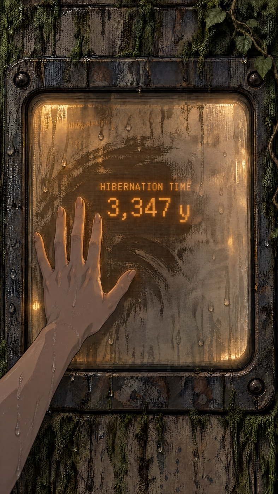
Text generated into the image, exact on the first try. Hand from the kneeling plate, panel from the straight plate, two lines of amber dot-matrix. The gamble was whether the animation would smear the letters under a moving hand.
Continuity miss, accepted: in the crawl she raises her right hand; the wipe reads as her left. Caught by Alex, left in. The squeak of the palm on wet glass is synthesized in the bed, timed to the hand.
Act 7 · the ending
The planned closer was the Goddess saying "Wakey wakey" and the girl flinching. The first version was played as horror and rejected. The second was played as disbelief, the number is ridiculous, and the line became a giggle and a "Boo". The picture was generated three times and the voice twenty-two.
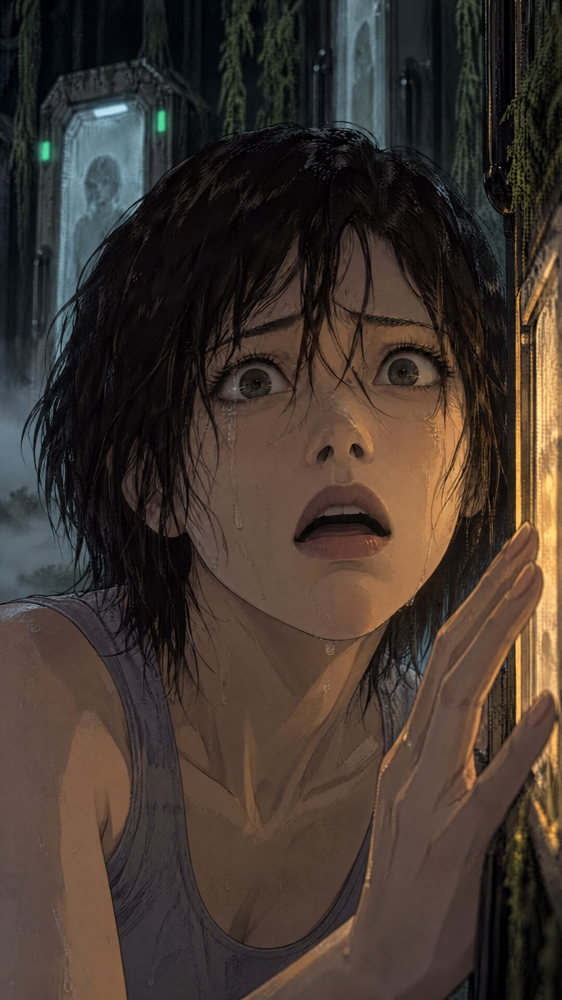
Too much, too early. Wide wet eyes, tears, mouth open. A good frame and the wrong emotion for someone who has just read a number she cannot believe.
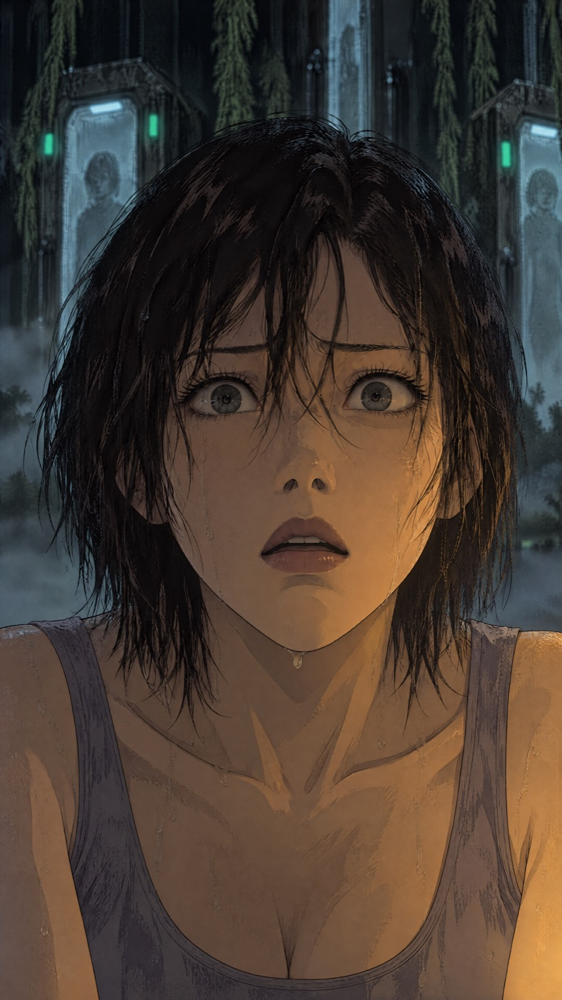
Frozen, not screaming. Eyes only a little wide, brows up, a drop off the jaw, drawn in the same ink as the new opening. The flinch has somewhere to go from here.
What the audio-reference test taught: reference-to-video treats a supplied voice as the on-screen character's speech. Told she must not speak, it dropped the line and left a breath. An off-screen voice has to be laid in by us, after, timed to the frame.
All one actress, the Goddess's voice from episodes one and two. The whisper is her register; Alex wanted higher and melodic; the cast take is the one with a giggle before the word, because the giggle is what she sounds like when she is having fun.
The flinch is a fixed frame, 4.0 seconds into the clip. The voice moves. Every placement is one number in the build script and a re-render under a new filename, because a player will happily show you last hour's file.
| Render | Line | Voice starts | Flinch | Verdict |
|---|---|---|---|---|
| v10 | Wakey wakey, a | 47.0s | 49.0s | "Her surprise is delayed" |
| v10c | Wakey wakey, a | 46.5s | 49.0s | Too far apart |
| v10d | Wakey wakey, a | 48.4s | 49.0s | "Better" |
| v12b | Boo, c | 50.0s | 50.5s | "Too whispering" |
| v13 | Boo, d | 49.5s | 50.0s | "Needs more work" |
| v14 | Giggle, Boo, f | 49.5s | 50.0s | "The gasp comes with a little delay" |
| v14b | Giggle, Boo, f | 49.85s | 49.96s | Locked |
| v15 | Wakey wakey, a, ends 0.4s before | 46.7s | 49.96s | Kept as the alternative |
The whispered Boo also died in the mix before it died in the room: the noise gate on the voice bus took an already quiet whisper down another 8 dB. That scene's bus now skips the gate and lifts only the Boo window. Found by measuring, not by listening.
Act 8 · the cut
Every cut is a script: encode the segments, concatenate, regenerate the procedural bed at the new length, lay in the voice buses, duck the bed under them, normalise. Two of the fifteen shipped a defect that only a measurement or a frame check could catch.
The bed is ducked under her voice with a sidechain compressor. That filter ends its output when its key stream ends, so from the first cut to the third the bed stopped dead after her last cough and the pan of the hall played at -91 dB. Fixed by padding the key to the full length. It had been there since the first assembly.
When the ending was swapped, the substitution hit the encode line and missed the bare filename in the concatenation list. Three cuts carried the new audio over the old picture. Alex caught it by watching. The rule that came out of it: after every scene swap, pull three frames from the finished file and look, never trust the script.
| Item | Detail | Cost |
|---|---|---|
| Nine video generations | Seedance via evolink, 720p; five with the model's own audio | $18.32 |
| Twenty-four image plates | Every one an edit with references; four killed, three unused | $2.95 |
| Two LTX animations | The opening stir and the wipe, native 1080x1920 | $0.96 |
| Twenty-eight voice takes and four effects | One actress, two words, most of the takes | $0.15 |
| Two camera moves, one screen page, three composites | ffmpeg and a browser | $0.00 |
| Ten stems of procedural sound | Hum, pod beat, fog, servo, drops, cicadas, the wipe squeak | $0.00 |
| Fifteen assemblies | Including the two with bugs | $0.00 |
| Total | Episode one $16.13, episode two $14.20 | $22.38 |
The overage is the ending: three takes of the last scene and the audio-reference experiment are $9.45 of the total. The rest of the film cost what the last two did.
Sixty seconds of the AI having fun. Then she wakes one of them up. Or something does. Where episode four starts